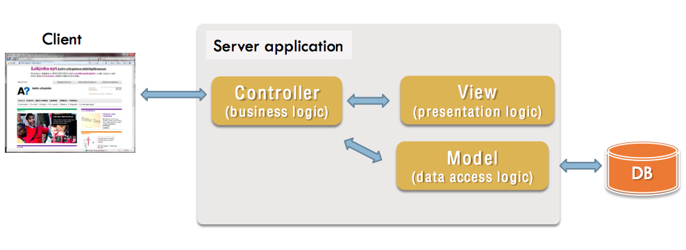

Django
Django, el framework hecho en python para perfeccionistas.
Created by pacifi
Agenda
- Introducción
- Entornos de trabajo
- Aplicación
- Django Rest.
Introducción
Fue desarrollado en origen para gestionar varias páginas orientadas a noticias de la World Company de Lawrence, Kansas, y fue liberada al público bajo una licencia BSD en julio de 2005; el framework fue nombrado en alusión al guitarrista de jazz gitano Django Reinhardt.
Django impulsa el desarrollo de código limpio al promover buenas prácticas de desarrollo web, sigue el principio DRY (conocido también como Una vez y sólo una). Django es una moficicación de la arquitectura MVC llamada MTV (Modelo, Template, Vista), (Modelo, Plantilla, Vista)
MVC
MTV

Motivación
Quienes Usan django
Entornos de Trabajo
Una Buena práctica de desarrollo es tener las dependencias de cada proyecto siempre ordenado.
Los entornos virtuales son espacios de trabajo creados dentro del equipo. La virtualización se puede relacionar mejor entendiendo como trabaja virtualbox o vmware que te crean un espacio de trabajo para que sobre este podamos instalar todo un sistema operativo. Uno de los más famosos entornos virtuales para python es virtualenv este entorno de virtualizacion tiene una opcion mas sofistica basada en virtualenv llamada virtualenvwrapper que es la opción que trabajaremos en este taller.
Instalación
$ sudo apt-get install python-pip
python-pip es un manejador de paquetes de
python el cual nos permitirá instalar de forma
mucho más sencilla los paquete que
necesitemos.
$ sudo pip install virtualenvwrapper
vemos como ahora usamos el manejador de
paquetes de python pip para la instalación de virtualenvwrapper.
Configuración
Crear los siguiente ficheros $ cd ~ $ mkdir .virtualenvs $ mkdir proyectosdjango
Copiar las siguientes líneas a .bashrc o .zshrc
export WORKON_HOME=$HOME/.virtualenvs
export PROJECT_HOME=$HOME/proyectosdjango
source /usr/local/bin/virtualenvwrapper.sh
Comandos
Crear Entorno de trabajo mkproject -p {pythonversion} {nombre-entorno}Desactiva Entorno de trabajo deactivateIngresa al Entorno de trabajo workon {nombre-entorno}Elimina Entorno de trabajo rmvirtualenv {nombre-entorno}
Aplicación
Instalar Django $ pip install djangocrear un proyecto django $ django-admin.py startproject {nombre_preyecto}Crear app $ django-admin.py startapp {nombre_app}Iniciar Migración $ python manage.py makemigrationsMigrar base de datos $ python manage.py migrate